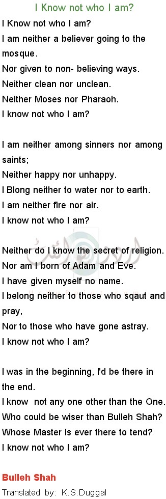
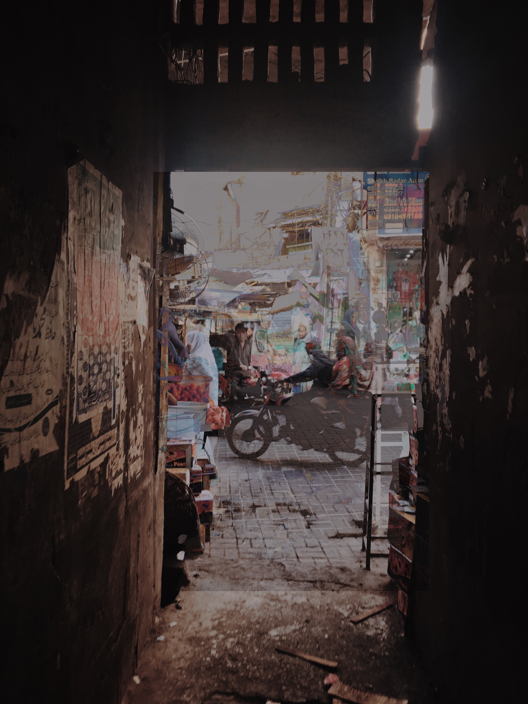

| Home |
| Family |
| Friends |
| Me :) |
| References |
 There is no one on this earth who is completely sure who they are as a person. Everyone is never sure but plays along with this realistic character they've made up like them. When Ms.Xie gave us this project, I was baffled about what to do. This semester has just been inputting info inside your head and giving tests based on that. My other subject was science which is why all I did was understand and write/type these whole 2 months. It felt as if my brain was running a computer program with me getting, input, processing it very very quickly(studying), and then putting my outputs on tests into homework. I got good grades and felt fulfilled enough and that is how I have spent the last 2 months. As one of my favourite Punjabi philosopher and Sufi poet, Bulleh Shah says
in the poem you can see towards the left side. I deeply relate to this line. I am a very indecisive person, I have no idea what I’m interested in. I like all subjects and manage to get pretty decent grades in them. I try to avoid thinking about what my future will look like as it gives me a lot of unnecessary stress and anxiety. I feel as if I plan everything out right now, I’m going to be a different person, want different things in the future and maybe even fall in love with a subject I would wanna study deep into. Until then, I’m happy with my good report cards and thriving as a teenager in the 21st century. Anyway, no one knows what they’re doing. I’ll figure it out later, life goes on and I’ll be okay. At least, that’s what I tell myself to feel comforted.
 Hi, my name is Huda Hameed. I’m in grade 9 at Victoria Park Collegiate Institute. I like watching Netflix, napping and talking to my friends.
I am in Slytherin house and really like Harry Potter. I watch the Harry Potter movies whenever I get the time.
I’m an outgoing person with my loved ones and am awkward around new people, but once they get used to me, I drop my craziness bomb on them.
This website will give you a little peek into my personal life and who I am as a person.
On the right, you can see two pictures I took in my hometown in Pakistan merged together.